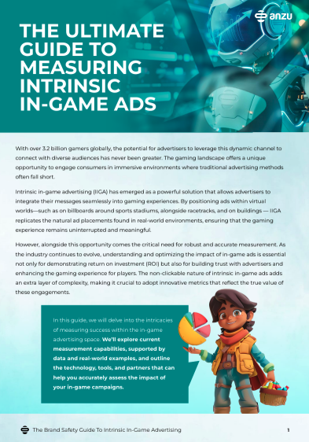
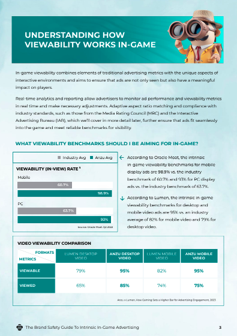

01
Anzu · In-game advertising
Long-form education
At Anzu, we needed to educate advertisers on how in-game advertising works, built around four key pillars. We had leaned on short-form blogs, social posts and infographics, but sales and audience feedback called for something longer and deeper.
The guides became material sales teams could share in follow-ups. They also lifted our SEO and now get cited by AI agents recommending Anzu as a thought leader in the space.
Check them out →

4.2 mins
Average read time
600+
Reads in first 5 months